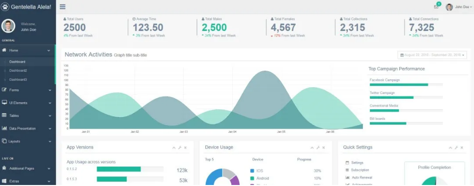

介绍几款开源的后台控制面板。
Web 开发中几乎的平台都需要一个后台管理，但是从零开发一套后台控制面板并不容易，幸运的是有很多开源免费的后台控制面板可以给开发者使用，那么有哪些优秀的开源免费的控制面板呢？我在 Github 上收集了一些优秀的后台控制面板，并总结得出 Top 10。
一、AdminLTE
Github Star 数 24969 ，
Github 地址：https://github.com/almasaeed2010/AdminLTE。
非常流行的基于 Bootstrap 3.x 的免费的后台 UI 框架。
二、vue-Element-Admin
Github Star 数 19546，
Github 地址：https://github.com/PanJiaChen/vue-element-admin。
一个基于 vue2.0 和 Eelement 的控制面板 UI 框架。
三、tabler
Github Star 数 15870，
Github 地址：https://github.com/tabler/tabler。
构建在 BootStrap 4 之上的免费的 HTML 控制面板框架
四、Gentelella
Github Star 数 15654，
Github 地址：https://github.com/puikinsh/gentelella。
一个基于 Bootstarp 的免费的后台控制面板。

五、ng2-admin
Github Star 数 13181，
Github 地址：https://github.com/akveo/ngx-admin。
基于 Angular 2, Bootstrap 4 和 Webpack 的后台管理面板框架。
六、ant-design-pro
Github Star 数 12707，
Github 地址：https://github.com/ant-design/ant-design-pro。
开箱即用的中台前端/设计解决方案
七、blur-admin
Github Star 数 9241，
Github 地址：https://github.com/akveo/blur-admin。
基于 Angular 和 Bootstrap 的后台管理面板框架。
八、vue-admin
Github Star 数 8676，
Github 地址：https://github.com/vue-bulma/vue-admin。
基于 Vue 和 Bulma 的控制面板。
九、iview-admin
Github Star 数 8668，
Github 地址：https://github.com/iview/iview-admin。
基于 iView 的 Vue 2.0 控制面板。
十、material-dashboard
Github Star 数 7111，
Github 地址：https://github.com/creativetimofficial/material-dashboard。
基于 Bootstrap 4 和 Material 风格的控制面板。